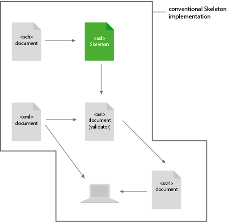
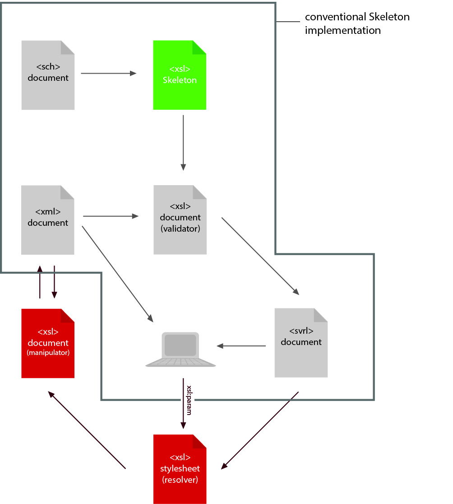
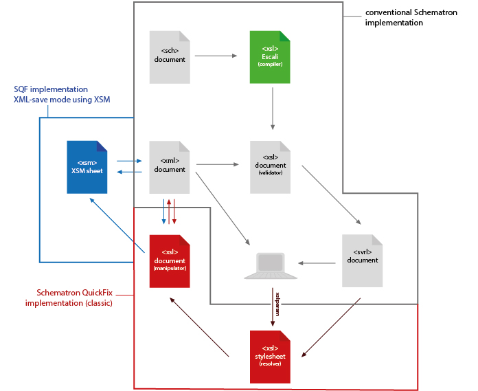

Why do we need it? What is the idea? How can it work?
By answering these questions, we demonstrate the concept of Schematron QuickFix.
Schematron has become a very popular language in the XML world. More and more publishers and other companies use Schematron to ensure the quality of their documents. The reasons for the breakthrough of Schematron do not matter here. We are interested in the task to handle Schematron reports. What is to be done if documents are not compliant with the Schematron schema? Who is able to fix the reported errors?
Today, the companies have two alternatives:
The author: He knows the context of the document. He is the expert in his subject and he knows what he intends with his content. But in most cases he is not very good in XML. In addition, he already committed the error! How shall he fix it correctly?
A XML expert: He is very good in XML. In some cases, he knows how to fix the error. But his working hours are very expensive. Moreover, there are many cases when he does not know how to fix the errors because he has to guess what the author has meant.
Because none of them is able to fix the Schematron reported errors, much communication is necessary to fix all errors correctly. So, the author and the XML expert need more time and the company loses much money.
In order to save money and nerves we will give the author the chance to solve the problem by himself without producing new errors. The Schematron report should not only list what the author did wrong. It should give him options – called QuickFixes – to fix these errors. The author can now choose which QuickFix is the right fix for the corresponding Schematron error.
When he has chosen the matching QuickFixes, he can "execute" them. With one click his problems end in smoke. Of course, we do not want to pretend that it is that easy. For many errors, no perfect QuickFix exists. However, sometimes the errors have to be fixed manually. But the QuickFixes can help in many situations.
Of course the main question is how we can implement such a workflow? Well, the "Schematron extension" does not only mean that there is an expanded grammar for Schematron. The whole concept of Schematron inspired us and we took it to implement the Schematron QuickFix extension. In order to explain how we are able to realise the Schematron QuickFix extension, let us look back to the general Schematron workflow:
The Schematron document is the input file of the Skeleton stylesheet. The Skeleton transforms the Schematron rules into XSLT templates being part of the validator stylesheet. This validator will be processed on the XML instance which shall be verified. The result of this XSLT transformation is a SVRL report.
The GUI shall illustrate the XML instance besides the SVRL report.
This is the Schematron workflow created by Rick Jelliffe. The extension workflow is also based on XSLT transformations.
During the normal Schematron validation for each Schematron error, each QuickFix defined for the corresponding <sch:report>/<sch:assert> is transformed into XSLT templates. These templates are embedded into the SVRL report.
Depending on which QuickFix the user selects, a new XSLT stylesheet (manipulator) will be built embedding the corresponding templates. The manipulator gets the XML instance as input file and writes a corrected instance.
The task of the resolver is to build the manipulator. For this purpose, via parameters from the GUI, the resolver receives the information which QuickFixes the user has selected. Then it takes the corresponding XSLT templates and other required information from the SVRL report.
This workflow has a significant disadvantage because it is completely based on XSLT: Since the source document is fixed by the manipulator during a XSLT transformation, a QuickFix can be executed relatively easily, but when copying with XSLT some information get lost which have possibly nothing to do with the passage in the document being fixed. Thus, the XML declartaion, the DOCTYPE declaration, non-relevant whitespace (outside the root element or in the start tag of an element) cannot be copied. Moreover, entities are resolved and attributes which are defined via default values in the DTD are written into the source document.
An inexperienced user will not understand why the formatting of the entire document changes or why attributes are written into the document only because he fixes an error somewhere in the document by using a QuickFix.
For this reason, the workflow described above was extended by the application of the specifically developed XSM (XPath-based String Manipulation) process. The XSM processor expects a XSM sheet containing simple manipulation instructions based on XPath expressions (e.g. delete /root/element1 or replace /root/element2 by <other-element>). The XSM processor carries out these instructions, but without the unwelcome side-effects occuring in XSLT. All information described above are preserved in the same form as contained in the source document. More information on the XSM process can be found in the process documentation (at the moment just available in german).
Changes in the schematic representation:
The workflow only changes in the task of the manipulator. Instead of manipulating the source document, the manipulator now generates by means of the source document a XSM sheet which takes over the previous role of the manipulator: The XSM sheet is passed on to the XSM processor together with the source document. The result of the process is the new fixed source document.
In order to mark the changed passages, marker PIs (change-markers) are inserted into the corrected XML instance. For each change there is a start PI sqfc-start and an end PI sqfc-end (the prefix sqfc stands for Schematron QuickFix changes).
The content of the PI indicates with a key which change was made (delete, replace, add or stringReplace). The key is linked with an ID for the change, so that the start PI and the end PI can be assigned to one another.
Example for a start PI:
<?sqfc-start add-d1e125?>
The matching end PI:
<?sqfc-end add-d1e125?>
Bellow a list of restrictions:
Schematron QuickFixes are only available within Schematron schemas based on XSLT 2.0 (@queryBinding="xslt2").
...